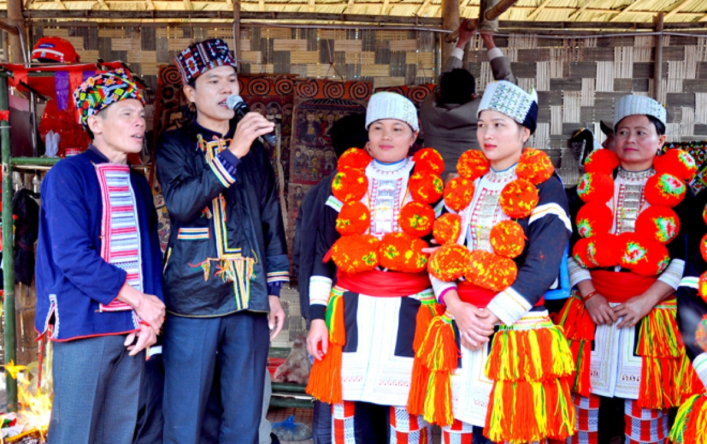

Mã tư liệu: PD002
Tên bài: đang cập nhật
Người thể hiện: đang cập nhật
Chủ đề: đang cập nhật
Loại hình: đang cập nhật
Ngôn ngữ: tiếng Dao
Thời lượng: đang tải...

Nghe bản ghi âm
Giới thiệu bài hát
Nội dung giới thiệu về bài Páo Dung, ý nghĩa và bối cảnh của bài hát sẽ được cập nhật tại đây.
Ý nghĩa văn hóa
Giá trị văn hóa, thông điệp và vai trò của bài Páo Dung trong đời sống cộng đồng người Dao sẽ được cập nhật tại đây.
Tài liệu liên quan
Tài liệu liên quan đến bài Páo Dung này sẽ được cập nhật tại đây.
Lời bài hát
Lời tiếng Dao
Nội dung lời Páo Dung sẽ được cập nhật tại đây.
Nghĩa tiếng Việt
Nội dung dịch nghĩa tiếng Việt sẽ được cập nhật tại đây.
Thông tin tư liệu
Địa điểm ghi âm: xã Hùng Lợi, tỉnh Tuyên Quang
Ngày ghi âm: đang cập nhật
Người sưu tầm: đang cập nhật
Hoàn cảnh diễn xướng: đang cập nhật
Chủ đề: đang cập nhật
Loại hình: đang cập nhật
Nguồn tư liệu: đang cập nhật
Quyền sử dụng tư liệu: đang cập nhật
Tình trạng tư liệu: Đang cập nhật và kiểm chứng
Người kiểm chứng: đang cập nhật
Ngày cập nhật cuối: đang cập nhật
Ghi chú tư liệu
Những ghi chú bổ sung về bản ghi, lời hát hoặc quá trình sưu tầm sẽ được cập nhật tại đây.
Cách trích dẫn tư liệu
“Bài Páo Dung số 02”, Kho tư liệu Páo Dung Hùng Lợi, xã Hùng Lợi, tỉnh Tuyên Quang. Mã tư liệu: PD002.